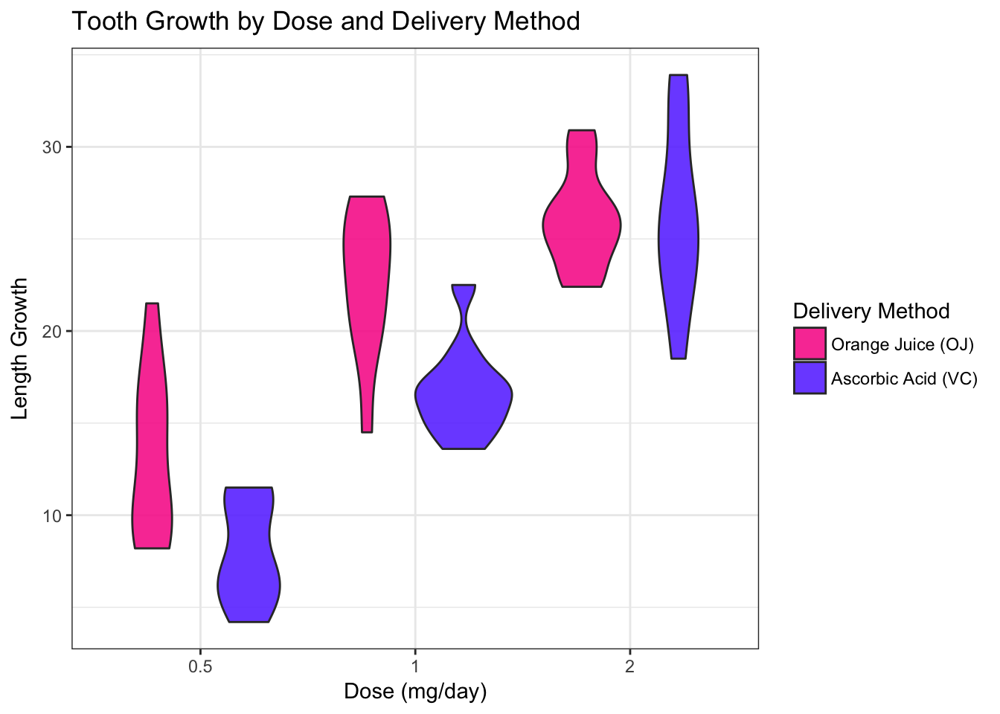

This is an analysis of the R dataset ToothGrowth which reports the length of odontoblasts in 60 guinea pigs. Each animal received one of three dose levels of vitamin C (0.5, 1, and 2 mg/day) by one of two delivery methods, orange juice (OJ) or ascorbic acid (VC).
library(ggplot2)
library(datasets)data <- ToothGrowth
str(data)## 'data.frame': 60 obs. of 3 variables:
## $ len : num 4.2 11.5 7.3 5.8 6.4 10 11.2 11.2 5.2 7 ...
## $ supp: Factor w/ 2 levels "OJ","VC": 2 2 2 2 2 2 2 2 2 2 ...
## $ dose: num 0.5 0.5 0.5 0.5 0.5 0.5 0.5 0.5 0.5 0.5 ...summary(data)## len supp dose
## Min. : 4.20 OJ:30 Min. :0.500
## 1st Qu.:13.07 VC:30 1st Qu.:0.500
## Median :19.25 Median :1.000
## Mean :18.81 Mean :1.167
## 3rd Qu.:25.27 3rd Qu.:2.000
## Max. :33.90 Max. :2.000ggplot(aes(y = len, fill = supp, x = as.factor(dose)), data = data) +
geom_violin(alpha = 0.9) +
scale_fill_manual(values=c("#F83399", "#6c44ff"),
labels = c("Orange Juice (OJ)", "Ascorbic Acid (VC)")) +
ylab("Length Growth") +
xlab("Dose (mg/day)") +
ggtitle("Tooth Growth by Dose and Delivery Method") +
guides(fill=guide_legend(title="Delivery Method")) +
theme_bw()
Graphical inspection shows a possible significant response to dose levels as seen by the positive relationship between Length Growth and Dose Level. Delivery method seems to have an effect at the lower dosis levels. The following analysis will test the significance of these differences.
ts0T <- t.test(len ~ supp, paired = FALSE, var.equal = TRUE, data = data)
ts0F <- t.test(len ~ supp, paired = FALSE, var.equal = FALSE, data = data)tests1 <- list(ts0T, ts0F)
results1 <- sapply(tests1, function(x) {
c(x$estimate[1],
x$estimate[2],
ci.lower = x$conf.int[1],
ci.upper = x$conf.int[2],
p.value = x$p.value)
})
results1 <- t(results1)
colnames(results1) <- c("meanOC", "meanVC",
"C.I.lower", "C.I.upper", "p.value")
rownames(results1) <- c("var.equal=TRUE", "var.equal=FALSE")
results1## meanOC meanVC C.I.lower C.I.upper p.value
## var.equal=TRUE 20.66333 16.96333 -0.1670064 7.567006 0.06039337
## var.equal=FALSE 20.66333 16.96333 -0.1710156 7.571016 0.06063451Zero is within the 95% confidence interval, therefore we can not reject the null hipothesis that the true difference in means is zero with this confidence level. However, I will explore more the response to delivery methods to the different dosis levels as the last part of this analysis.
When comparing the two different variance assumptions, there was not significant difference in the results. The same was true for all of the following tests so for the remainder of this analisys I will assume EQUAL VARIANCES
sub1 <- subset(data, dose %in% c(0.5, 1))
td1T <- t.test(len ~ dose, paired = FALSE, var.equal = TRUE, data = sub1)
sub2 <- subset(data, dose %in% c(0.5, 2))
td2T <- t.test(len ~ dose, paired = FALSE, var.equal = TRUE, data = sub2)
sub3 <- subset(data, dose %in% c(1, 2))
td3T <- t.test(len ~ dose, paired = FALSE, var.equal = TRUE, data = sub3)tests2 <- list(td1T, td2T, td3T)
results2 <- sapply(tests2, function(x) {
c(x$estimate[1],
x$estimate[2],
ci.lower = x$conf.int[1],
ci.upper = x$conf.int[2],
p.value = x$p.value)
})
results2 <- t(results2)
colnames(results2) <- c("meanLowDose", "meanHighDose",
"C.I.lower", "C.I.upper", "p.value")
rownames(results2) <- c("0.5mg vs 1.0mg", "0.5mg vs 2.0mg",
"1.0mg vs 2.0mg")
results2## meanLowDose meanHighDose C.I.lower C.I.upper p.value
## 0.5mg vs 1.0mg 10.605 19.735 -11.983748 -6.276252 1.266297e-07
## 0.5mg vs 2.0mg 10.605 26.100 -18.153519 -12.836481 2.837553e-14
## 1.0mg vs 2.0mg 19.735 26.100 -8.994387 -3.735613 1.810829e-05The results show significant differences in the means when comparing any two doses levels. In the three cases we can reject the null hipothesis that the true difference is zero with at least 95% confidence, although the p-values suggest much higher confidence.
subS1 <- subset(data, dose == 0.5)
ts1T <- t.test(len ~ supp, paired = FALSE, var.equal = TRUE, data = subS1)
subS2 <- subset(data, dose == 1)
ts2T <- t.test(len ~ supp, paired = FALSE, var.equal = TRUE, data = subS2)
subS3 <- subset(data, dose == 2)
ts3T <- t.test(len ~ supp, paired = FALSE, var.equal = TRUE, data = subS3)tests3 <- list(ts1T, ts2T, ts3T)
results3 <- sapply(tests3, function(x) {
c(x$estimate[1],
x$estimate[2],
ci.lower = x$conf.int[1],
ci.upper = x$conf.int[2],
p.value = x$p.value)
})
results3 <- t(results3)
colnames(results3) <- c("meanOJ", "meanVC",
"C.I.lower", "C.I.upper", "p.value")
rownames(results3) <- c("dose = 0.5mg", "dose = 1.0mg",
"dose = 2.0mg")
results3## meanOJ meanVC C.I.lower C.I.upper p.value
## dose = 0.5mg 13.23 7.98 1.770262 8.729738 0.0053036613
## dose = 1.0mg 22.70 16.77 2.840692 9.019308 0.0007807262
## dose = 2.0mg 26.06 26.14 -3.722999 3.562999 0.9637097790Results show a significant difference in means for delivery methods for the two lower dosage levels, however, for the highest dosage this difference vanishes.
Higher dosis levels are associated with greater tooth length, independent of delivery method.
At the two lower dose levels (0.5 mg/day and 1.0 mg/day), orange juice is associated with greater tooth length than ascorbic acid.
At the highest dose level (2.0 mg/day), delivery method seems to have no effect.
The variance equality assumption had a negligible effect in the results, therefore only the results assuming equal variance are reported.